/math-5c09300d675833793616502094acaa0f.png "H_1:\mu_1-\mu_2 \ne \mu_d") 両側
両側
内容 |
この関数は、2つの対応のある標本の平均の差が に等しいかどうかを検定するのに使われます。(例：平均が等しいかどうかを検定するには、それらの差が0、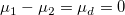 であるかどうかを検定するだけです。)そして、仮説は次の形式をとります。
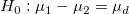 vs 両側
/math-1fc800dcea3acfe50f9e90c310b1174a.png "H_0:\mu_1-\mu_2 \le \mu_d") vs
vs /math-0fbc9ae55928f128a94afcf65c2c2e39.png "H_1:\mu_1-\mu_2 > \mu_d") 上側
上側
/math-8d8812a65564ffde40d299d450d3de7f.png "H_0:\mu_1-\mu_2 \ge \mu_d") 対
対 /math-9a968e5033dd7110b7973529fa35c85d.png "H_1:\mu_1-\mu_2 < \mu_d") 下側
下側
正規分布した母集団からとられたと見なされる2つの標本 /math-d60f5062564e1ece65993038b62484fa.png "x_1\,\!") と
と /math-9defdb27049cde0b5bdfd4e762a02d6b.png "x_2\,\!") が同じサイズであると考えると、次のように差を定義することができます。
が同じサイズであると考えると、次のように差を定義することができます。
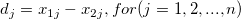
そして、それぞれの差の平均は次式で求められます。
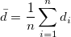
次に、自由度 v = n−1を持つ対応のあるデータポイント間の差 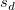 の標準偏差sdを計算できます。
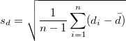
そして検定する統計量を次式で計算します。
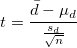
限界値を持つ t の値を比較し、次の場合、帰無仮説/math-806277203dedea2ed8321f6cbd465a54.png "H_0\,\!") を棄却します。
を棄却します。
両側検定： /math-dc78eff8d710d926c9d712cebdb408d0.png "|t| > t_{\sigma/2}\,\!") ;
;
上側検定： 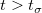;
下側検定：/math-b3c0361ff553afb248a469861134f399.png "t < -t_\sigma\,\!") ;
;
p 値もユーザ指定の有意水準, /math-3ac6004d77c0cc0055e95c99b9dfd7e0.png "\sigma\,\!") と比較され、その値は通常0.05が使われます。
と比較され、その値は通常0.05が使われます。/math-d797c315e459e13f929c1778f48760a9.png "p < \sigma\,\!") の場合、帰無仮説 が棄却されます。
の場合、帰無仮説 が棄却されます。
対応のある標本の平均の差 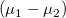 の信頼区間は、次のようになります。
| 帰無仮説 | 信頼区間 |
|---|---|
| 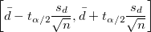 | |
|
|
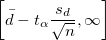 |
|
|
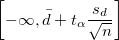 |
2標本の t検定の検出力は、その感度の測定です。検出力の計算に関する詳細なアルゴリズムについては、検出力とサンプルサイズのヘルプをご覧下さい。